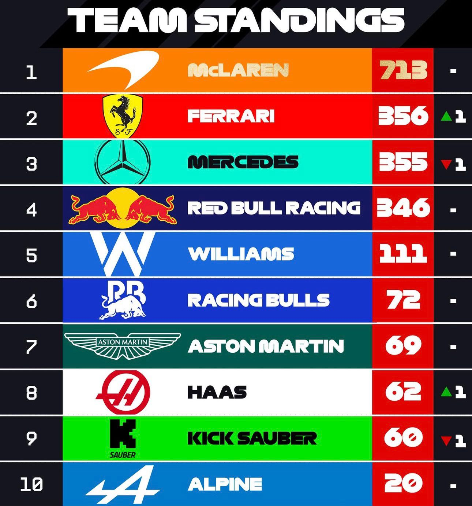
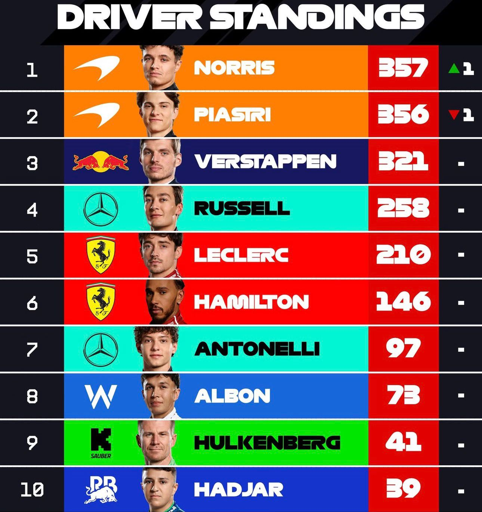
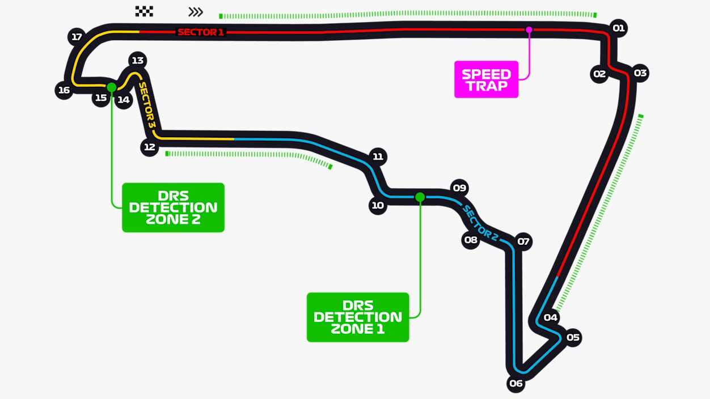

Ultima Gara: Circuito del Messico
Dettagli completi della gara disputata il 26 Ottobre 2025
Circuito Hermanos Rodríguez, Messico
Data: 26 Ottobre 2025
Vincitore: Lando Norris (McLaren)
1
Max Verstappen
Red Bull
2
Lando Norris
McLaren
3
Charles Leclerc
Ferrari
Informazioni Gara
Giri: 71
Lunghezza circuito: 4.304 km
Distanza gara: 308.405 km
Giro Veloce
Pilota: George Russell
Team: Mercedes
Tempo: 1:20.052
Condizioni Meteo
Temperatura: 28°C
Asfalto: 52°C
Condizioni: Soleggiato
Classifica Completa
| Pos | Pilota | Team | Tempo/Gap | Punti |
|---|---|---|---|---|
| 1 | Lando Norris | McLaren | 1:37:42.123 | 25 |
| 2 | Charles Leclerc | Ferrari | +30.324 | 18 |
| 3 | Max Verstappen | Red Bull | +31.876 | 15 |
| 4 | Oliver Bearman | Haas | +40.234 | 12 |
| 5 | Oscar Piastri | McLaren | +42.567 | 10 |
| 6 | Kimi Antonelli | Mercedes | +47.891 | 8 |
| 7 | George Russell | Mercedes | +50.123 | 6 |
| 8 | Lewis Hamilton | Ferrari | +56.876 | 4 |
| 9 | Esteban Ocon | Haas | +75.345 | 2 |
| 10 | Gabriel Bortoleto | Sauber | +76.678 | 1 |
Statistiche della Gara
1
Virtual Safety Car
55
Sorpassi
4
Ritiri
0
Bandiera Rossa


Layout del Circuito

Circuito del Messico - F1 2025